Zoom Quick Start Guide for Windows 7, 8, and 10
If you are one of the many people making the transition to life and working at home in 2020, you may have found yourself being asked or required to use Zoom to join a video call with family, friends, or for work. If you're completely new to Zoom, don't worry: it's fairly straightforward to use, and this guide will provide a quick walkthrough to get you set up and ready to join Zoom meetings.
We will cover how to:
on Windows 7, 8, or 10.
Why not use the Zoom web client?
While Zoom's web client is ideal for joining and hosting one-time meetings, the desktop client gives you more options and flexibility, such as the ability to schedule meetings, record them to your computer, and more control over your privacy. This guide covers the desktop client, so your system will be ready should you need these more advanced features.
Installing Zoom on Windows
On Windows, the Zoom client is tied to a Windows account. If multiple accounts on the same computer need Zoom, you must install it again, separately, under those accounts. In this section, we'll show you how to install it for your account.
To install Zoom on your Windows account:
-
Log in to your Windows account.
-
In a web browser such as Chrome or Firefox, navigate to the Zoom download page: https://zoom.us/download
-
Download the installer under Zoom Client for Meetings.
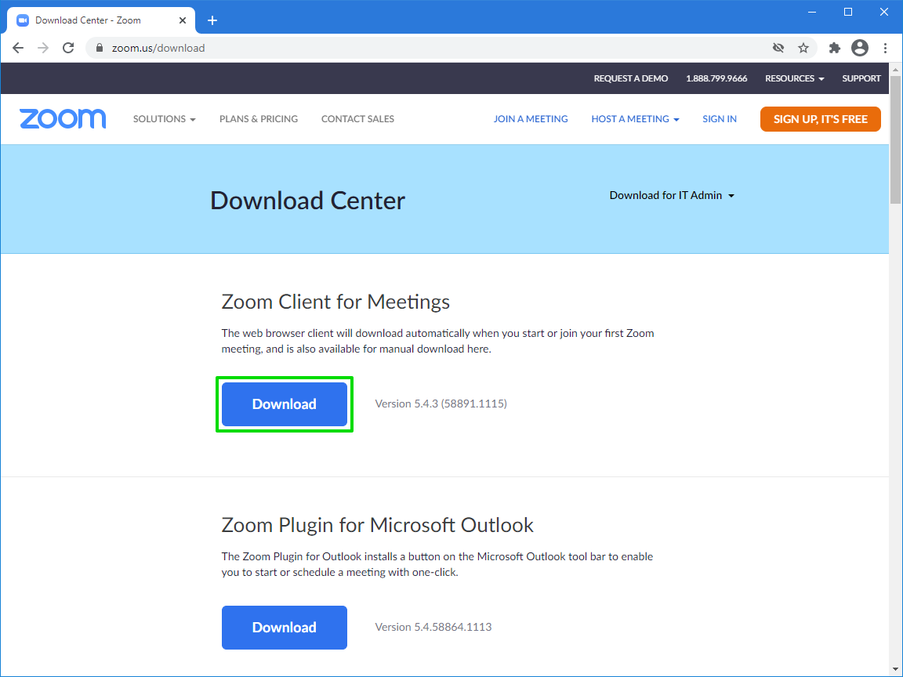-
If a file dialog appears and asks you to choose a file destination, select an appropriate location on the computer.
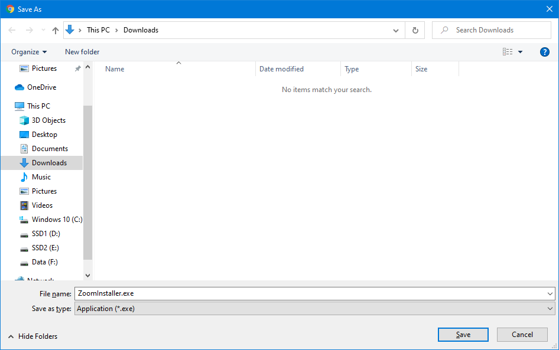
-
-
After it has downloaded, run the installer by clicking it in the browser's recent downloads pane.
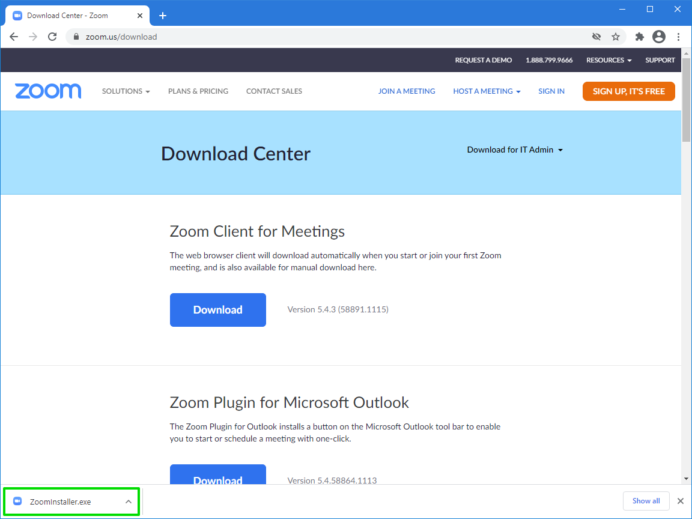 -
Windows might interrupt with a security warning. Click Run to begin installing Zoom.
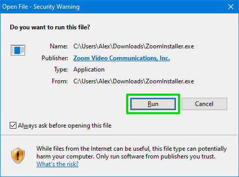 -
After it has completed installation, Zoom will launch.
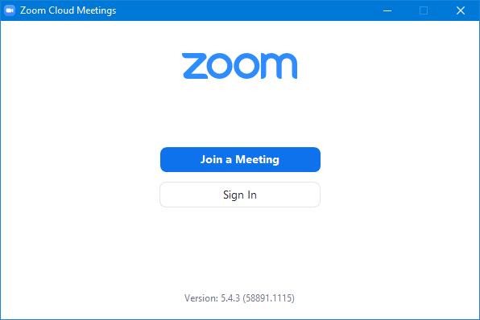
{kind=link}
{kind=link}
{kind=link}
{kind=link}
{kind=link}
Zoom is now installed for your Windows account. From here, you can now join someone else's meeting, or log in to Zoom to host and schedule your own meetings.
Joining a Zoom meeting
There are two ways to join a Zoom meeting:
Here is an example of a Zoom meeting invitation attached to a Google Calendar event, displaying both joining methods:
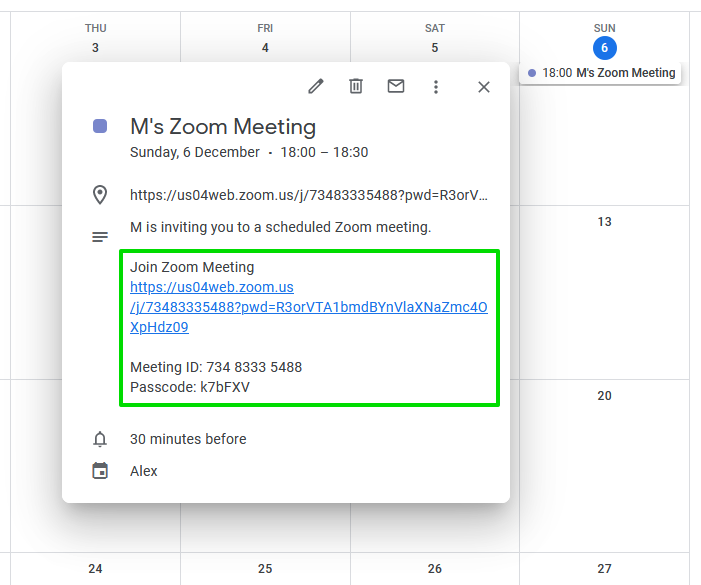Both ways will allow you to connect to the meeting, but the meeting host may have only provided you with one or the other. The link is the faster method.
Connecting with a meeting link (recommended)
If you have been provided with a link to the meeting:
-
In your web browser, navigate to the link provided by the host.
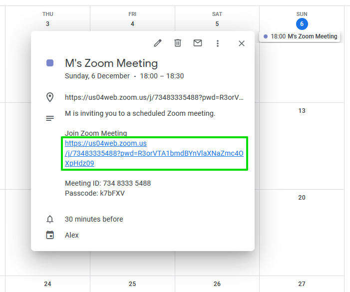You will be taken to a download page on the Zoom website.
-
Your browser will ask if you want to open the link with the Zoom desktop client. Click Open to launch Zoom and automatically connect to the meeting.
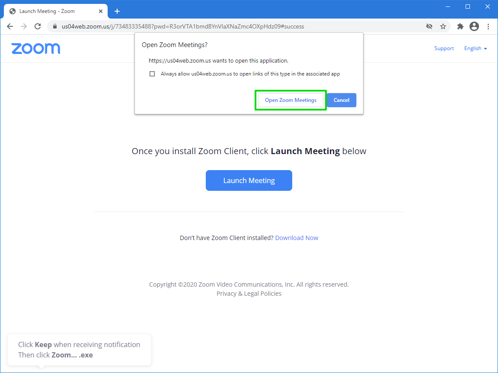
{kind=link}
{kind=link}
Now that you are connected, you can join the meeting.
Connecting with a meeting ID and passcode
If you have been provided with an ID and passcode for the meeting:
-
Launch Zoom:
-
If you haven't logged into Zoom before, open the Start Menu, then search for and select Zoom.

-
Alternatively, if you have logged in to Zoom before, you can launch Zoom from the desktop shortcut.
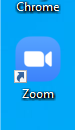
-
-
Connect to the meeting:
-
Copy-paste or type the 11-digit meeting ID, then click Join.
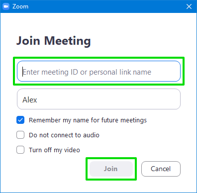 -
Copy-paste or type the 6-character meeting passcode, then click Join Meeting.
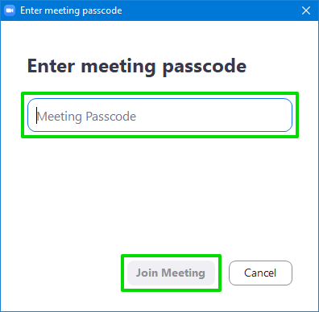
{kind=link}
{kind=link}
{kind=link}
{kind=link}
{kind=link}
Now that you are connected, you can join the meeting.
Joining the meeting
After you have connected to the meeting, there are a few extra steps to take before you can join:
-
A preview of your webcam feed will appear. If this is a video meeting, we recommend you take this time to prepare yourself and your surroundings. If you wish to join with your webcam turned on, click Join with Video. If you wish to join with your webcam turned off, click Join without Video.
-
A temporary blind will appear while you wait for the host to allow you entry into the meeting. There's nothing to do here but be patient!
-
After the host has allowed you in, you will be asked to allow Zoom to use your computer audio. Click Join with Computer Audio.
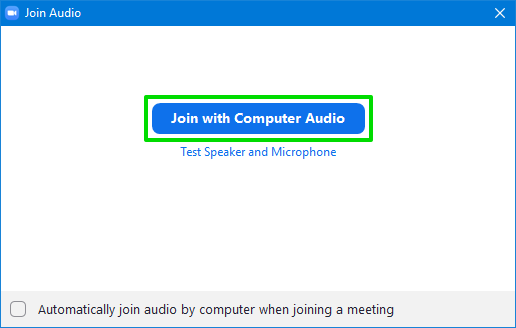
{kind=link}
{kind=link}
{kind=link}
By now you should be inside the Zoom meeting, and you can begin watching and participating.